Download an R script with the solutions from day 1 from here.
1 ggplot2
1.1 and 1.2 Getting started with ggplot and palmerpenguins
# install.packages("tidyverse")
# install.packages("palmerpenguins")
library(tidyverse)
library(palmerpenguins)- Have a look at the penguin data set
penguins# A tibble: 344 × 8
species island bill_length_mm bill_…¹ flipp…² body_…³ sex year
<fct> <fct> <dbl> <dbl> <int> <int> <fct> <int>
1 Adelie Torgersen 39.1 18.7 181 3750 male 2007
2 Adelie Torgersen 39.5 17.4 186 3800 fema… 2007
3 Adelie Torgersen 40.3 18 195 3250 fema… 2007
4 Adelie Torgersen NA NA NA NA <NA> 2007
5 Adelie Torgersen 36.7 19.3 193 3450 fema… 2007
6 Adelie Torgersen 39.3 20.6 190 3650 male 2007
# … with 338 more rows, and abbreviated variable names
# ¹bill_depth_mm, ²flipper_length_mm, ³body_mass_g1.3 Exploratory plotting
1.3.1 Relationship between bill length and bill depth (scatterplot)
What is the relationship between bill length and bill depth?
- Create a scatterplot with bill length on the x-axis and bill depth on the y-axis
- Can you add a regression line?
- Add species as color aesthetic. Does your interpretation of the data change?
- What is the difference between adding color as a global aesthetic or as a local aesthetic of the point layer?
- Add species as shape aesthetic as well to distinguish the species
# Bill length vs. bill depth scatterplot with regression line
ggplot(
data = penguins,
aes(
x = bill_length_mm,
y = bill_depth_mm
)
) +
geom_point() +
geom_smooth(method = "lm", se = FALSE)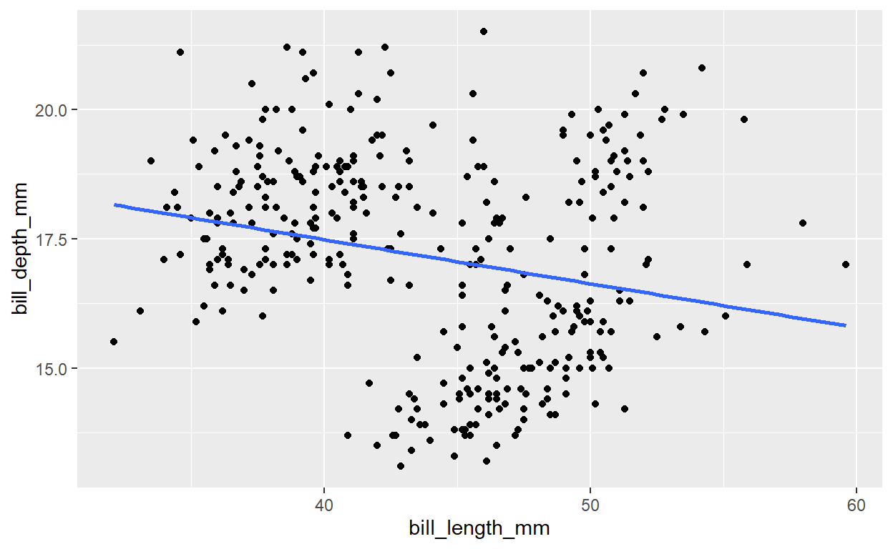
# or short
ggplot(penguins, aes(bill_length_mm, bill_depth_mm)) +
geom_point() +
geom_smooth(method = "lm", se = FALSE)If we add the color aesthetic locally to the point layer, only this layer will be affected by it. The regression line is not separated by species but still calculated and plotted for all data points together:
# Bill length vs. bill depth scatterplot with regression line
# color as aesthetic local to the point layer
ggplot(penguins, aes(bill_length_mm, bill_depth_mm)) +
geom_point(aes(color = species)) +
geom_smooth(method = "lm", se = FALSE)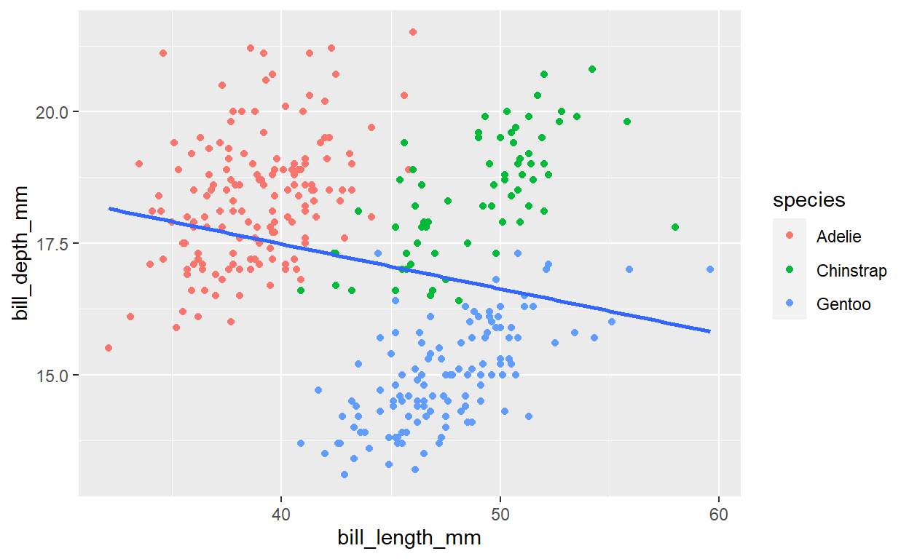
We can see an example of the Simpson’s paradox here. If you don’t consider species, it looks like the bill depth decreases with bill length. But after separating the data by species, we see that the effect is actually the opposite.
To draw separate regression lines for the species, we need to either add the color aesthetic to the smooth layer as well, or define the color aesthetic gloablly in the top layer ggplot call.
# Option A: Define color aesthetic in smooth layer as well
ggplot(penguins, aes(x = bill_length_mm, y = bill_depth_mm)) +
geom_point(aes(color = species)) +
geom_smooth(aes(color = species),
method = "lm", se = FALSE
)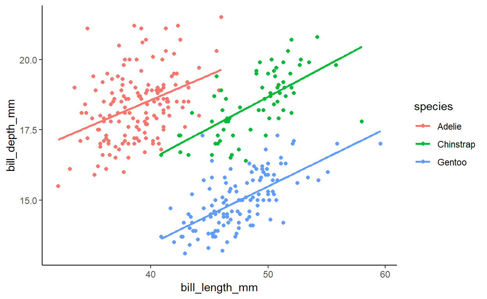
1.3.2 Difference in flipper length between species (boxplot)
Is there a difference in flipper length between the species?
- Create a boxplot of the flipper length (y-axis) for the different species (x-axis)
- Try adding notches to the boxplots by setting
notch = TRUEin the boxplot layer - Extra: Add a layer with
geom_point(). Try settingposition = position_jitter()as argument in the point layer. What does it do?
# Basic boxplot of flipper length with notches
ggplot(penguins, aes(species, flipper_length_mm)) +
geom_boxplot(notch = TRUE)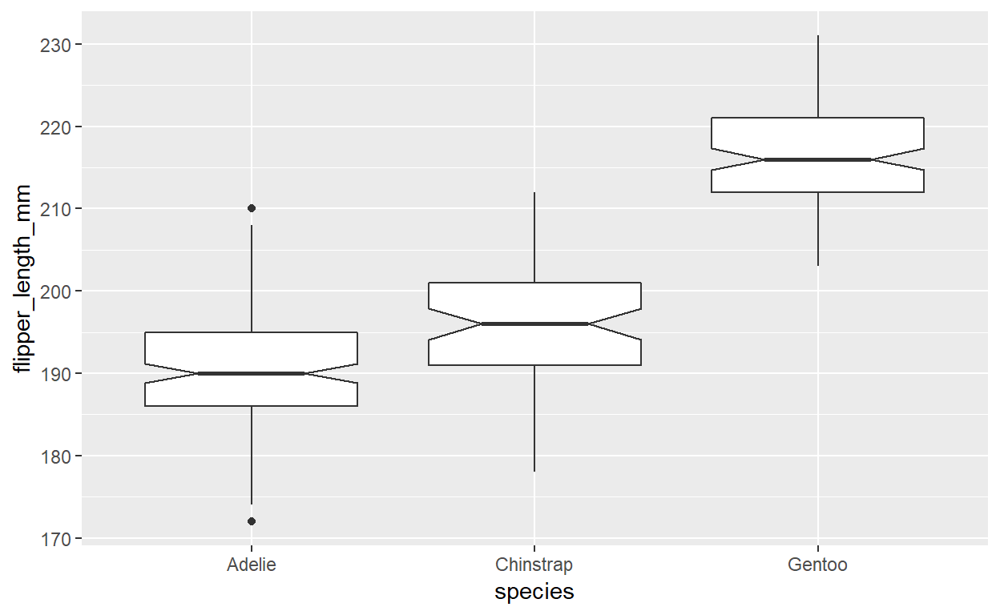
A geom_point with position = position_jitter() will add the individual data points to the plot. It’s important to set a seed here to get the same result for the point position on the x-axis every time. Otherwise your plot is not reproducible.
ggplot(penguins, aes(species, flipper_length_mm)) +
geom_boxplot() +
geom_point(position = position_jitter(seed = 123))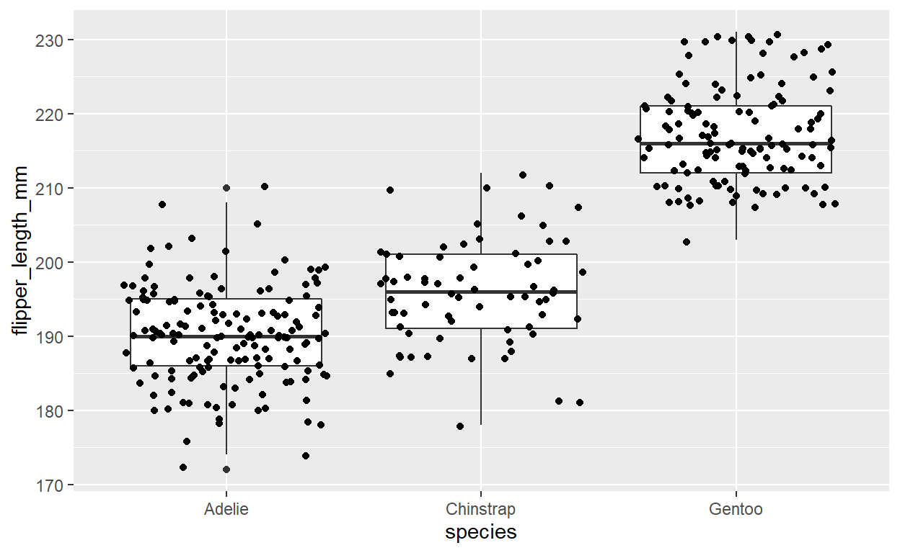
1.3.3 Differences between body mass of male and female penguins (boxplot)
Are male penguins heavier than female penguins? And is this different between the 3 species?
- Create a boxplot with body mass on the y axis and sex on the x axis
- Add the difference between penguin species to this plot. Try the different options ggplot offers
- species as color aesthetic
- species as fill aesthetic
- species as facet using
facet_wrap
- Extra: What happens if you use
geom_violininstead ofgeom_boxplot? Can you combine both geoms in one plot?
# Basic boxplot of body mass for penguins of different sex
ggplot(penguins, aes(x = sex, y = body_mass_g)) +
geom_boxplot()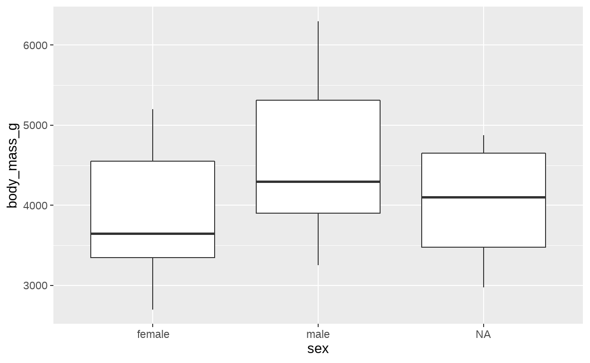
Species as color aesthetic:
ggplot(penguins, aes(x = sex,
y = body_mass_g)) +
geom_boxplot(aes(color = species))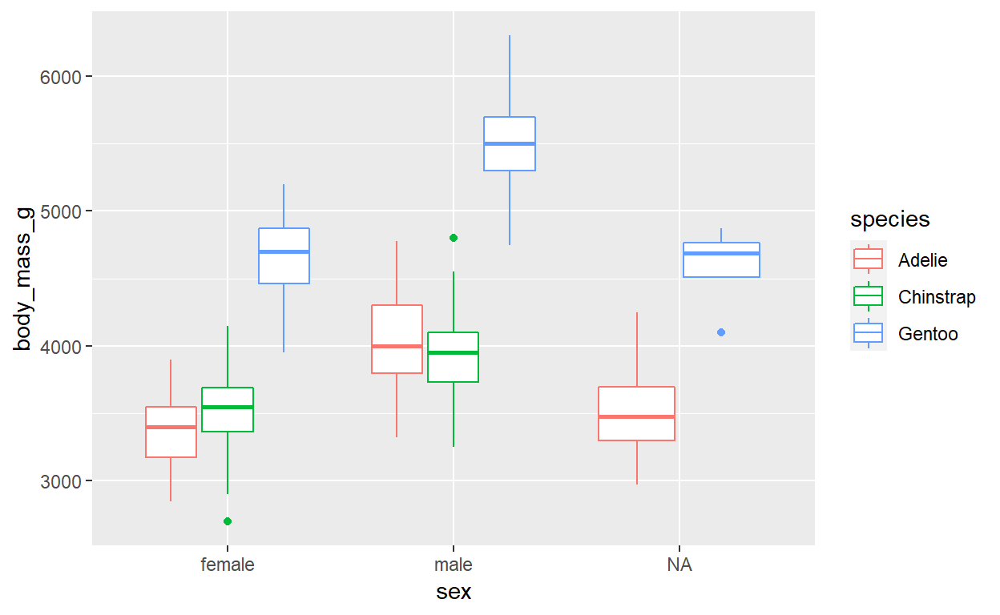
Species as fill aesthetic
ggplot(penguins, aes(x = sex, y = body_mass_g)) +
geom_boxplot(aes(fill = species))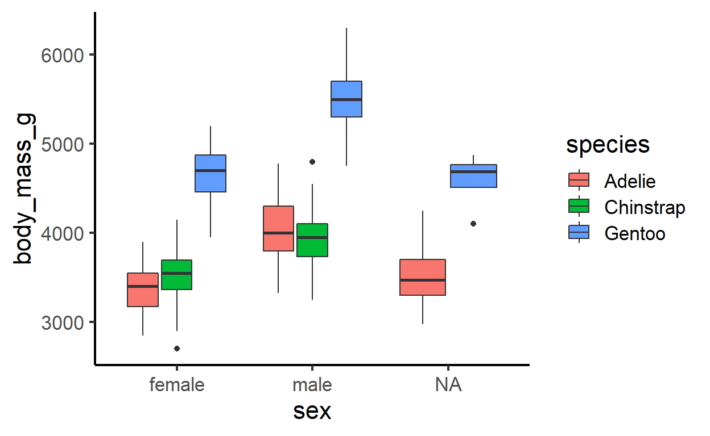
Species as facets:
ggplot(penguins, aes(x = sex, y = body_mass_g)) +
geom_boxplot() +
facet_wrap(~species)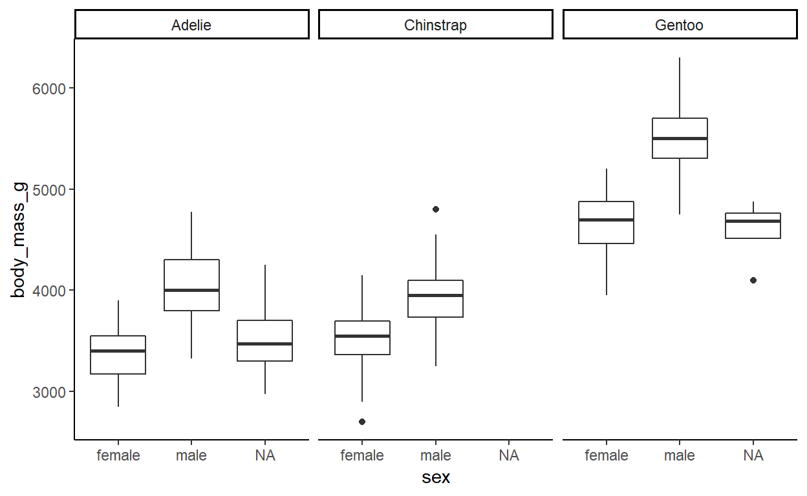
With geom_violin
ggplot(penguins, aes(x = sex, y = body_mass_g)) +
geom_violin() +
geom_boxplot(width = .4) +
facet_wrap(~species)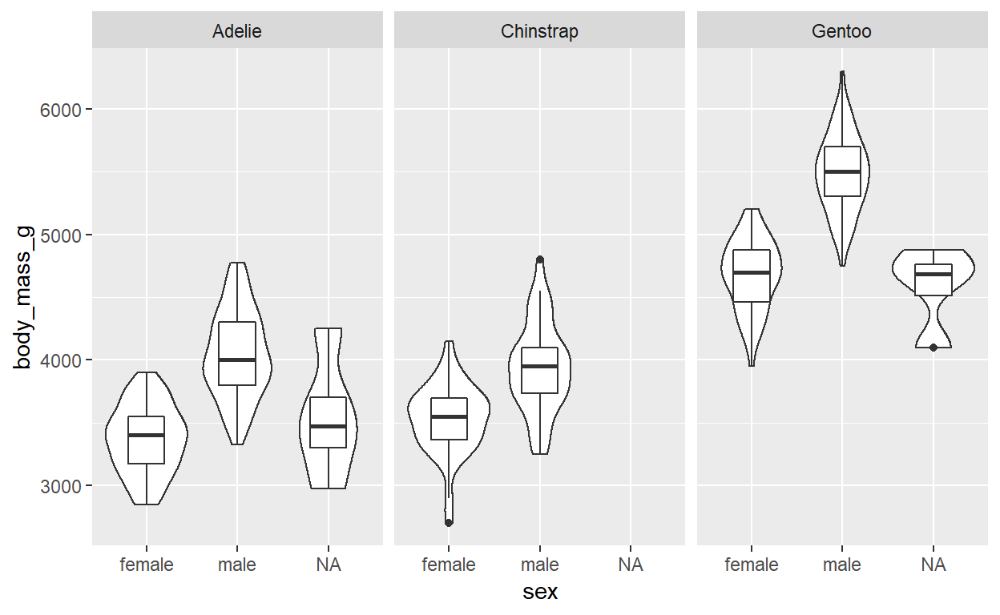
1.3.4 Distribution of flipper length between species (histogram)
Make a histogram of the the flipper length separated by species.
Try different methods of separating the species (color or facet).
Compare stacked and overlapping histograms.
Stacked histogram (default position is "stacked")
ggplot(penguins, aes(
x = flipper_length_mm,
fill = species
)) +
geom_histogram()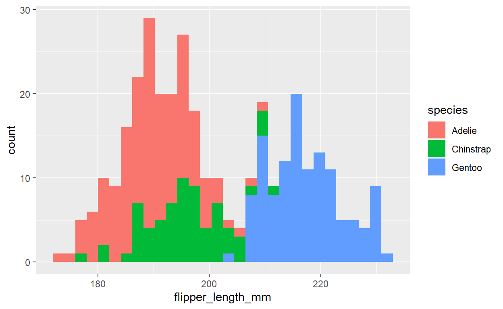
Overlapping histogram
ggplot(penguins, aes(
x = flipper_length_mm,
fill = species
)) +
geom_histogram(
alpha = 0.5,
position = "identity"
)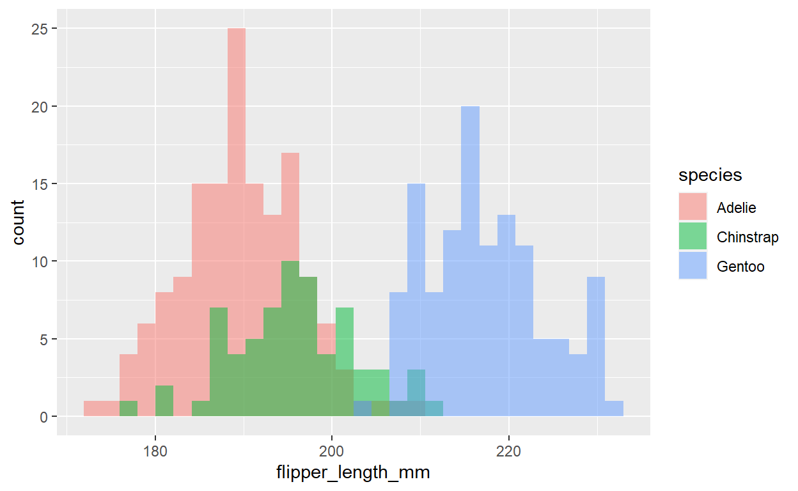
Separated by facets (no need to specify the position because only one group per plot):
ggplot(penguins, aes(
x = flipper_length_mm,
fill = species
)) +
geom_histogram() +
facet_wrap(~species, scales = "free_x", ncol = 1)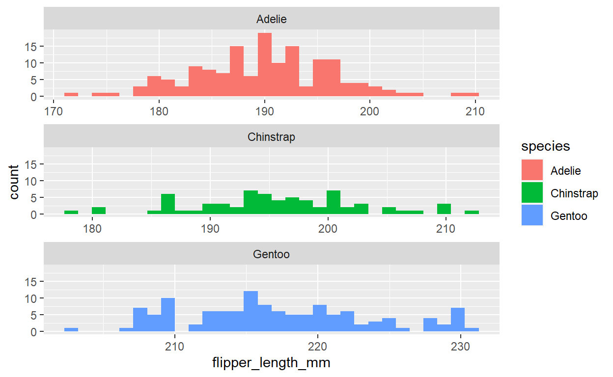
1.3.5 Penguin flipper length by species and sex (heatmap)
Create a heat map that shows:
- The categories sex and species on x- and y-axis
- The flipper length as color
For this data it does not make too much sense, but a heat map would look like this:
1.4 Beautify the plots
1.4.1 Beatuify plots from 1.3
Here are just some examples of how to make the plots from before prettier. Of course there a many other options as well.
Example one: Boxplot of flipper length and species
ggplot(penguins, aes(species, flipper_length_mm, color = species)) +
geom_boxplot(width = 0.3) +
geom_point(
alpha = 0.5,
position = position_jitter(width = 0.1, seed = 123)
) +
ggsci::scale_color_uchicago() +
labs(x = "Species", y = "Flipper length (mm)") +
theme_minimal() +
theme(legend.position = "none")What was changed compared to the basic plot?
- Add color for each species by setting a global
coloraesthetic - Make boxes and jitter points less wide by setting
widthfor both layers - Make jitter points slightly transparent by specifying
alpha = 0.5for the jitter layer - Change the color to nicer colors from the
ggscipackage - Change from default theme to
theme_minimal() - Remove the legend with
legend.position = "none" - Change the axis labels with
labs()
Example two: Reproducing the plot from the presentation
The following code is adapted from the palmerpengins package website.
ggplot(
data = penguins,
aes(
x = bill_length_mm,
y = bill_depth_mm,
color = species,
shape = species
)
) +
geom_point(size = 3, alpha = 0.8) +
geom_smooth(method = "lm", se = FALSE) +
scale_color_manual(values = c("darkorange", "purple", "cyan4")) +
labs(
title = "Penguin bill dimensions",
subtitle = "Bill length and depth for Adelie, Chinstrap and Gentoo Penguins at Palmer Station LTER",
x = "Bill length (mm)",
y = "Bill depth (mm)",
color = "Penguin species",
shape = "Penguin species"
) +
theme_minimal() +
theme(
legend.position = c(0.85, 0.15),
legend.background = element_rect(fill = "white", color = NA)
)What was changed compared to the basic plot?
- Make points larger and slightly transparent by setting
sizeandalphafor the point layer - Change to custom color scale
- Add title and subtitle with
labs - Change title of x-axis, y-axis and legend for color and shape aesthetic with
labs - Use
theme_minimal()instead of default theme - Change legend position to bottom right corner within the plot
- Positions are relative to the bottom left corner of the plot
- 0.85 (85% of plot width) to the right
- 0.15 (15% of plot height) towards the top
1.5 Save one of the plots on your machine
Example with one of the plots from above:
flipper_box <- ggplot(penguins, aes(species, flipper_length_mm, color = species)) +
geom_boxplot(width = 0.3) +
geom_jitter(alpha = 0.5, position = position_jitter(width = 0.2, seed = 123)) +
ggsci::scale_color_uchicago() +
labs(x = "Species", y = "Flipper length (mm)") +
theme_minimal() +
theme(legend.position = "none")Some more examples
Histogram
ggplot(penguins, aes(x = flipper_length_mm, fill = species)) +
geom_histogram(alpha = 0.6) +
ggsci::scale_fill_d3() +
labs(
y = "Frequency",
x = "Flipper length [mm]",
fill = "Penguin species"
) +
theme_minimal()Heat map
For the penguin data set a heat map does not make that much sense. But an example would be:
ggplot(penguins, aes(
x = species,
y = sex,
fill = flipper_length_mm
)) +
geom_tile() +
scale_fill_viridis_c() +
theme_classic()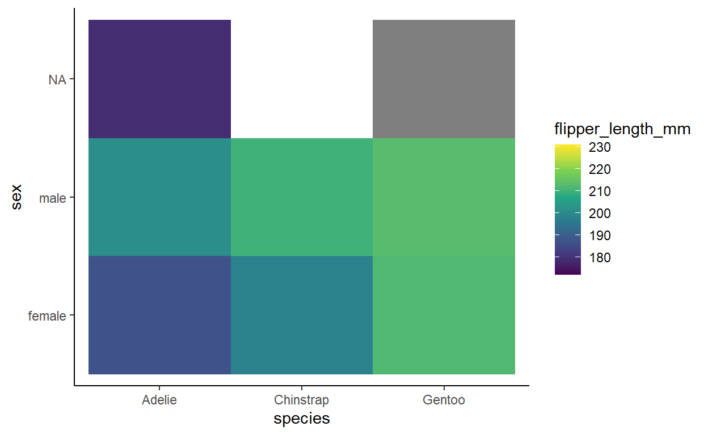
The plotly package
You can use the plotly package to create interactive plots where you can e.g. hover over an area of your plot with the mouse and the respective values will be displayed.
To get started, you have to install the plotly package
install.packages("plotly")You can use any ggplot and wrap it in the ggplotly function from the plotly package to make it interactive, e.g.
plotly::ggplotly(flipper_box)The patchwork package
With the patchwork package, you can combine multiple ggplots into one plot. The package allows you to add annotations to the plot and to control the layout and appearance.
Below you find a simple example of two different penugin scatterplots. For more explanation and an overview of what is possible with the package, please have a look at the package documentation
# library(patchwork)
# # Collecting legends and defining a common theme
# plot_1 <- ggplot(penguins, aes(
# x = bill_length_mm, y = bill_depth_mm,
# color = species
# )) +
# geom_point()
#
# plot_2 <- ggplot(penguins, aes(
# x = bill_length_mm, y = body_mass_g,
# color = species
# )) +
# geom_point()
#
# # Simple combination of 2 plots in patchwork
# plot_1 + plot_2
#
# # more complex combination with annotation and definition of shared layers
# final_plot <- plot_1 + plot_2 +
# plot_layout(guides = "collect") +
# plot_annotation(tag_levels = "a", tag_prefix = "(", tag_suffix = ")") &
# theme_minimal() &
# scale_color_manual(values = c("darkorange", "purple", "cyan4")) &
# labs(
# color = "Penguin species"
# ) &
# theme(
# plot.tag.position = c(0.1, 0.95),
# plot.tag = element_text(face = "bold")
# )References
Check out the package website of the palmerpenguin package. They have more nice examples of data visualizations that you can do with ggplot.
Horst AM, Hill AP, Gorman KB (2020). palmerpenguins: Palmer Archipelago (Antarctica) penguin data. R package version 0.1.0. https://allisonhorst.github.io/palmerpenguins/. doi: 10.5281/zenodo.3960218.
[1] FALSE2 dplyr
2.2 Data transformation with dplyr
Find all penguins that …
- … have a bill length between 40 and 45 mm.
# A tibble: 77 × 8
species island bill_length…¹ bill_…² flipp…³ body_…⁴ sex year
<fct> <fct> <dbl> <dbl> <int> <int> <fct> <int>
1 Adelie Torgersen 40.3 18 195 3250 fema… 2007
2 Adelie Torgersen 42 20.2 190 4250 <NA> 2007
3 Adelie Torgersen 41.1 17.6 182 3200 fema… 2007
4 Adelie Torgersen 42.5 20.7 197 4500 male 2007
5 Adelie Biscoe 40.6 18.6 183 3550 male 2007
6 Adelie Biscoe 40.5 17.9 187 3200 fema… 2007
7 Adelie Biscoe 40.5 18.9 180 3950 male 2007
8 Adelie Dream 40.9 18.9 184 3900 male 2007
9 Adelie Dream 42.2 18.5 180 3550 fema… 2007
10 Adelie Dream 40.8 18.4 195 3900 male 2007
# … with 67 more rows, and abbreviated variable names
# ¹bill_length_mm, ²bill_depth_mm, ³flipper_length_mm, ⁴body_mass_g# same as
# filter(penguins, bill_length_mm < 45 & bill_length_mm > 40)- … for which we know the sex.
# A tibble: 333 × 8
species island bill_length…¹ bill_…² flipp…³ body_…⁴ sex year
<fct> <fct> <dbl> <dbl> <int> <int> <fct> <int>
1 Adelie Torgersen 39.1 18.7 181 3750 male 2007
2 Adelie Torgersen 39.5 17.4 186 3800 fema… 2007
3 Adelie Torgersen 40.3 18 195 3250 fema… 2007
4 Adelie Torgersen 36.7 19.3 193 3450 fema… 2007
5 Adelie Torgersen 39.3 20.6 190 3650 male 2007
6 Adelie Torgersen 38.9 17.8 181 3625 fema… 2007
7 Adelie Torgersen 39.2 19.6 195 4675 male 2007
8 Adelie Torgersen 41.1 17.6 182 3200 fema… 2007
9 Adelie Torgersen 38.6 21.2 191 3800 male 2007
10 Adelie Torgersen 34.6 21.1 198 4400 male 2007
# … with 323 more rows, and abbreviated variable names
# ¹bill_length_mm, ²bill_depth_mm, ³flipper_length_mm, ⁴body_mass_g- … which are of the species Adelie or Gentoo and live either on Dream or on Torgersen
# A tibble: 108 × 8
species island bill_length…¹ bill_…² flipp…³ body_…⁴ sex year
<fct> <fct> <dbl> <dbl> <int> <int> <fct> <int>
1 Adelie Torgersen 39.1 18.7 181 3750 male 2007
2 Adelie Torgersen 39.5 17.4 186 3800 fema… 2007
3 Adelie Torgersen 40.3 18 195 3250 fema… 2007
4 Adelie Torgersen NA NA NA NA <NA> 2007
5 Adelie Torgersen 36.7 19.3 193 3450 fema… 2007
6 Adelie Torgersen 39.3 20.6 190 3650 male 2007
7 Adelie Torgersen 38.9 17.8 181 3625 fema… 2007
8 Adelie Torgersen 39.2 19.6 195 4675 male 2007
9 Adelie Torgersen 34.1 18.1 193 3475 <NA> 2007
10 Adelie Torgersen 42 20.2 190 4250 <NA> 2007
# … with 98 more rows, and abbreviated variable names
# ¹bill_length_mm, ²bill_depth_mm, ³flipper_length_mm, ⁴body_mass_g# or
# filter(penguins, (species == "Adelie" | species == "Gentoo") &
# (island == "Dream" | island == "Torgersen"))- … lived on the island Dream in the year 2007. How many of them were from each of the 3 species?
# A tibble: 2 × 2
species n
<fct> <int>
1 Adelie 20
2 Chinstrap 26Count …
- … the number of penguins on each island.
count(penguins, island)# A tibble: 3 × 2
island n
<fct> <int>
1 Biscoe 168
2 Dream 124
3 Torgersen 52- … the number of penguins of each species on each island.
count(penguins, island, species)# A tibble: 5 × 3
island species n
<fct> <fct> <int>
1 Biscoe Adelie 44
2 Biscoe Gentoo 124
3 Dream Adelie 56
4 Dream Chinstrap 68
5 Torgersen Adelie 52Select …
- … only the variables species, sex and year
select(penguins, species, sex, year)# A tibble: 344 × 3
species sex year
<fct> <fct> <int>
1 Adelie male 2007
2 Adelie female 2007
3 Adelie female 2007
4 Adelie <NA> 2007
5 Adelie female 2007
6 Adelie male 2007
7 Adelie female 2007
8 Adelie male 2007
9 Adelie <NA> 2007
10 Adelie <NA> 2007
# … with 334 more rows- … variables based on the following vector
# A tibble: 344 × 3
species bill_length_mm flipper_length_mm
<fct> <dbl> <int>
1 Adelie 39.1 181
2 Adelie 39.5 186
3 Adelie 40.3 195
4 Adelie NA NA
5 Adelie 36.7 193
6 Adelie 39.3 190
7 Adelie 38.9 181
8 Adelie 39.2 195
9 Adelie 34.1 193
10 Adelie 42 190
# … with 334 more rowsError in `select()`:
! Problem while evaluating `all_of(cols)`.
Caused by error in `all_of()`:
! Can't subset elements that don't exist.
✖ Element `body_mass_kg` doesn't exist.- … only columns that contain measurements in mm
# A tibble: 344 × 3
bill_length_mm bill_depth_mm flipper_length_mm
<dbl> <dbl> <int>
1 39.1 18.7 181
2 39.5 17.4 186
3 40.3 18 195
4 NA NA NA
5 36.7 19.3 193
6 39.3 20.6 190
7 38.9 17.8 181
8 39.2 19.6 195
9 34.1 18.1 193
10 42 20.2 190
# … with 334 more rows# or
#select(penguins, contains("_mm"))Add a column …
- … with the ratio of bill length to bill depth
mutate(penguins,
ratio = bill_length_mm / bill_depth_mm)# A tibble: 344 × 9
species island bill_…¹ bill_…² flipp…³ body_…⁴ sex year ratio
<fct> <fct> <dbl> <dbl> <int> <int> <fct> <int> <dbl>
1 Adelie Torgersen 39.1 18.7 181 3750 male 2007 2.09
2 Adelie Torgersen 39.5 17.4 186 3800 fema… 2007 2.27
3 Adelie Torgersen 40.3 18 195 3250 fema… 2007 2.24
4 Adelie Torgersen NA NA NA NA <NA> 2007 NA
5 Adelie Torgersen 36.7 19.3 193 3450 fema… 2007 1.90
6 Adelie Torgersen 39.3 20.6 190 3650 male 2007 1.91
7 Adelie Torgersen 38.9 17.8 181 3625 fema… 2007 2.19
8 Adelie Torgersen 39.2 19.6 195 4675 male 2007 2
9 Adelie Torgersen 34.1 18.1 193 3475 <NA> 2007 1.88
10 Adelie Torgersen 42 20.2 190 4250 <NA> 2007 2.08
# … with 334 more rows, and abbreviated variable names
# ¹bill_length_mm, ²bill_depth_mm, ³flipper_length_mm, ⁴body_mass_g- … with abbreviations for the species (Adelie = A, Gentoo = G, Chinstrap = C).
mutate(penguins,
species_short = case_when(
species == "Adelie" ~ "A",
species == "Gentoo" ~ "G",
species == "Chinstrap" ~ "C"
))# A tibble: 344 × 9
species island bill_…¹ bill_…² flipp…³ body_…⁴ sex year speci…⁵
<fct> <fct> <dbl> <dbl> <int> <int> <fct> <int> <chr>
1 Adelie Torger… 39.1 18.7 181 3750 male 2007 A
2 Adelie Torger… 39.5 17.4 186 3800 fema… 2007 A
3 Adelie Torger… 40.3 18 195 3250 fema… 2007 A
4 Adelie Torger… NA NA NA NA <NA> 2007 A
5 Adelie Torger… 36.7 19.3 193 3450 fema… 2007 A
6 Adelie Torger… 39.3 20.6 190 3650 male 2007 A
7 Adelie Torger… 38.9 17.8 181 3625 fema… 2007 A
8 Adelie Torger… 39.2 19.6 195 4675 male 2007 A
9 Adelie Torger… 34.1 18.1 193 3475 <NA> 2007 A
10 Adelie Torger… 42 20.2 190 4250 <NA> 2007 A
# … with 334 more rows, and abbreviated variable names
# ¹bill_length_mm, ²bill_depth_mm, ³flipper_length_mm,
# ⁴body_mass_g, ⁵species_shortCalculate …
- … mean flipper length and body mass for the 3 species and male and female penguins separately
penguins %>%
group_by(species, sex) %>%
summarize(
mean_flipper = mean(flipper_length_mm, na.rm = TRUE),
mean_body = mean(body_mass_g, na.rm = TRUE)
) # A tibble: 8 × 4
# Groups: species [3]
species sex mean_flipper mean_body
<fct> <fct> <dbl> <dbl>
1 Adelie female 188. 3369.
2 Adelie male 192. 4043.
3 Adelie <NA> 186. 3540
4 Chinstrap female 192. 3527.
5 Chinstrap male 200. 3939.
6 Gentoo female 213. 4680.
7 Gentoo male 222. 5485.
8 Gentoo <NA> 216. 4588.- Can you do the same but remove the penguins for which we don’t know the sex first?
penguins %>%
filter(!is.na(sex)) %>%
group_by(species, sex) %>%
summarize(
mean_flipper = mean(flipper_length_mm, na.rm = TRUE),
mean_body = mean(body_mass_g, na.rm = TRUE)
)# A tibble: 6 × 4
# Groups: species [3]
species sex mean_flipper mean_body
<fct> <fct> <dbl> <dbl>
1 Adelie female 188. 3369.
2 Adelie male 192. 4043.
3 Chinstrap female 192. 3527.
4 Chinstrap male 200. 3939.
5 Gentoo female 213. 4680.
6 Gentoo male 222. 5485.Extras
- Make a boxplot of penguin body mass with sex on the y-axis and facets for the different species. Can you remove the penguins with missing values for sex first?
penguins %>%
filter(!is.na(sex)) %>%
ggplot(aes(x = sex, y = body_mass_g)) +
geom_boxplot() +
facet_wrap(~species)
- Make a scatterplot with the ratio of bill length to bill depth on the y axis and flipper length on the x axis? Can you distinguish the point between male and female penguins and remove penguins with unknown sex before making the plot?
penguins %>%
mutate(ratio = bill_length_mm / bill_depth_mm) %>%
filter(!is.na(sex)) %>%
ggplot(aes(x = flipper_length_mm, y = ratio, color = sex)) +
geom_point() +
scale_color_manual(values = c("cyan4", "darkorange")) +
labs(
x = "Flipper lenght (mm)",
y = "Ratio bill length / bill depth (-)"
) +
theme_minimal()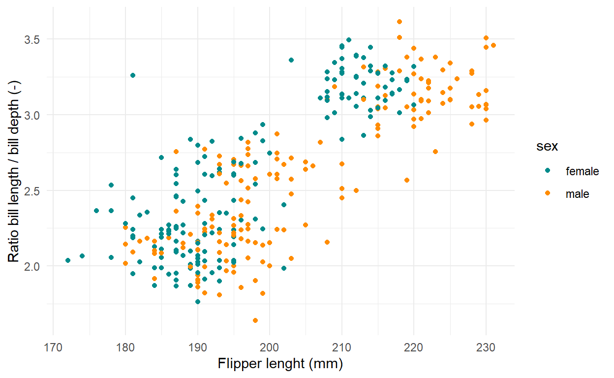
[1] FALSE